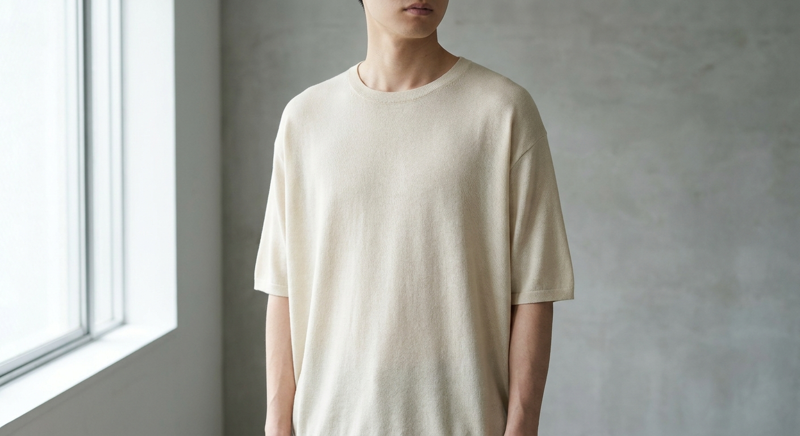
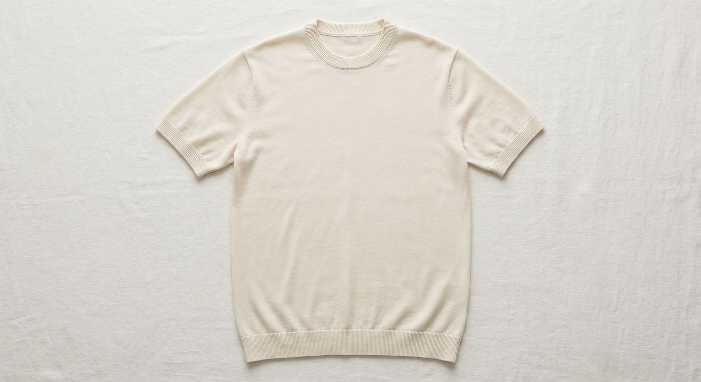
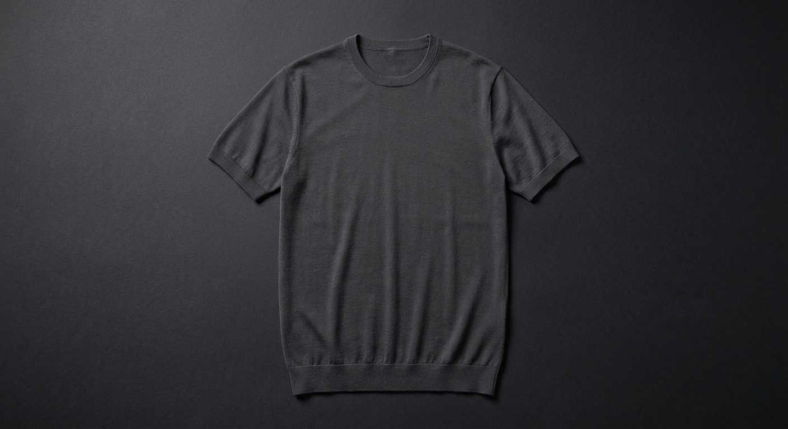
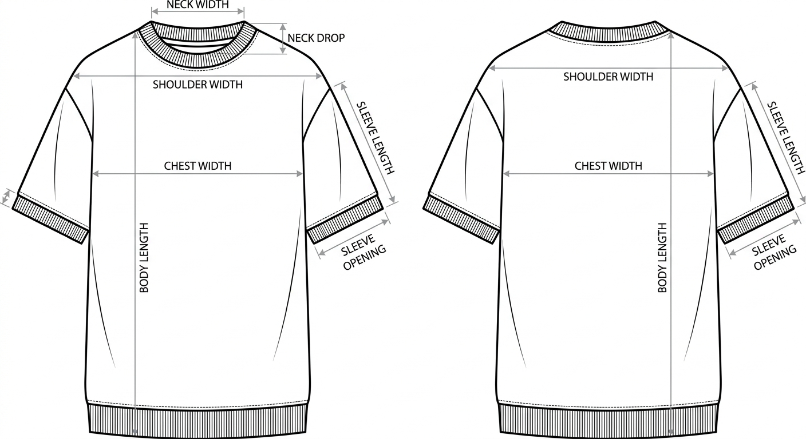
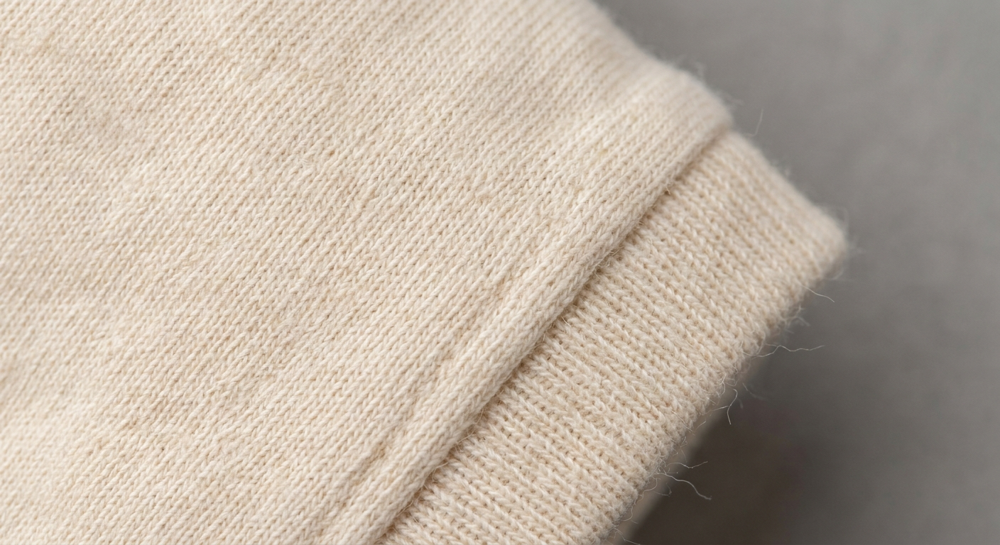

無縫製クルーネック 半袖「一」
縫い目ゼロの無地クルー。足し算でなく、引き算と構造で勝つ。
ホールガーメントで一着丸ごと立体編成 — 縫いしろ0・カットロス0。

着用イメージ / きなり（AIモック・実物は試作で確定）
| 縫い目ゼロ | 脇/肩がねじれない・擦れない・破れの起点が無い ＝ 一生もの級の寿命 |
|---|---|
| 軽さ/肌当たり | 着た瞬間に分かる差（体験価値） |
| サステナ | カットロス0・縫いしろ0 の端材ゼロ生産 |
| 1型を磨く | 反復生産で型費（編成プログラム）を償却 ＝ 1着あたりは下がる |
→ 万人向けの安価Tではなく「価値が分かる人」向けのプレミアム1型として売る。
| 製法 | WHOLEGARMENT 無縫製（後付けはネーム1点のみ） |
|---|---|
| 組織 | 天竺（無地）／ 襟・袖口・裾は 1×1 リブ |
| シルエット | リラックス・ややドロップショルダー（ユニセックス） |
| ゲージ | 18G（ハイゲージ・薄手Tシャツ的）／ 目付目標 180〜210 g/m² |
| 糸 | コットン100%（在庫糸優先・毛玉/縮みの不安を最小化） |
| 仕上げ | 洗い＋プレス／ 縮率は工場申告・洗濯試験で確定 |
| 表示 | 組成・原産国・洗濯表示タグ ＋ ブランドネーム |
| ロゴ | 無地（後ろ首にネーム1点のみ） |

01 きなり（初回）

02 チャコール（将来）
初回は無染きなり1色（染めロット不要）。色は需要が立ってから追加。

前面・背面 ／ 寸法注記は下表に対応
| 部位 | 1 (S) | 2 (M) | 3 (L) |
|---|---|---|---|
| 着丈 | 64 | 67 | 70 |
| 身幅 | 50 | 53 | 56 |
| 肩幅（ドロップ） | 45 | 48 | 51 |
| 袖丈 | 21 | 22 | 23 |
| 袖口幅 | 16 | 17 | 18 |
| 襟ぐり巾（内寸） | 18 | 19 | 20 |
| 襟ぐり深さ（前） | 8 | 8.5 | 9 |
リブの伸びで実寸が動く → 試編み後に実測補正。PDPに平置き実寸＋着用身長例を必須掲載（返品対策）。

18G 天竺 + 1×1 リブ / きなり（コットン100）